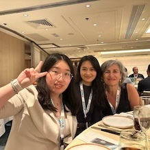
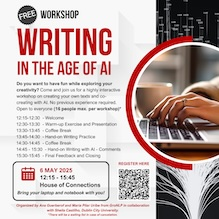
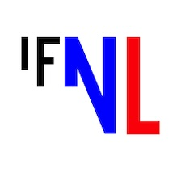
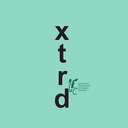
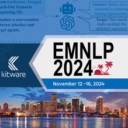
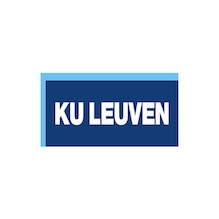

Uncovering the macro creative process in subtitling
Ana Guerberof Arenas and Xiaolu Wang attended Media4all in Hong Kong from 28th to 30th May. Xiaolu Wang presented at the conference, discussing preliminary results from WP1 on the major stages of the subtitling creative process and how these stages progress over time.
You can find more information about the conference here.
29-05-2025
Writing in the age of AI
As part of INCREC, Ana Guerberof Arenas, Pilar Uribe Silva, from the Computational Linguistcs Group and Sheila Castilho from Dublin City University are organising a creative writing workshop in collaboration with the Jantina Tammes school within the Language and AI coordinated by Tommaso Caselli. The workshop will take place on May 6th 2025 and the goal is to explore creativity while writing and how this is affected by our interaction with generative AI.
You can find more information here.
06-05-2025
Creativité et technologie, et maintenant?
Ana Guerberof Arenas was invited as a keynote speaker by Platform Frans Netherlands to give a keynote presentation about literary translation and artifical intelligence (AI) during the third edition of the La Fabrique de la traduction littéraire.
You can find more information about the program here.
21-03-2025
AI will kill the translation star?
Ana Guerberof Arenas was invited as a speaker to talk about the role of AI and translation together with Elisenda Bernal as part of the XXXIII Seminari de Traducció organised by Catalan Association of Writers and Literary Translators in Barcelona.
More info about the program and talk can be found here.
01-03-2025
What the Harm?
The paper 'What the Harm? Quantifying the Tangible Impact of Gender Bias in Machine Translation with a Human-centered Study by Beatrice Savoldi, Sara Papi, Matteo Negri, Ana Guerberof-Arenas, Luisa Bentivogli won the social impact award at the EMNLP conference.
You can read the full paper via the link.
01-03-2025
The INCREC project: creativity and technology in translation
Ana Guerberof Arenas was invited as a keynote speaker at The 1st Workshop on Creative-text Translation and Technology Proceedings to talk about the INCREC project. She gave an overview of how creativity is conceptualised in the social sciences, mainly psychology and sociology, including different frameworks that facilitate analysing creativity.
More information about the workshop and Ana's talk can be found here.
27-06-2024